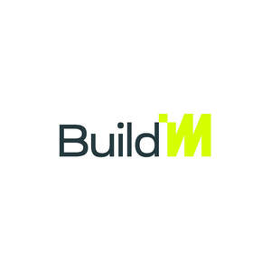

Trade Mark Journal No.2025/028 11 July 2025
UK00004224398 25 June 2025 (36,37)

- Class 36
- Management of property; Property management; Leasing of property; Property management services; Property asset management services; Property investment services; Rental of property; Time-share property management; Real estate and property management services; Real property management; Valuation of property; Property valuation; Estate management services relating to transactions in real property.
- Class 37
- Construction; Building construction; Scaffolding construction; Building, construction and demolition; Construction of buildings; Buildings (Construction of -); Industrial construction; Residential construction; Building construction supervision; Supervision (Building construction -); Supervision of building construction; Building construction and demolition services; Building construction and repair; Construction of property; Commercial construction; Building construction consultancy; Supervision of construction; Custom building construction; Building and construction services; Building construction services; Construction of walls; Construction of houses; Custom construction of buildings; Construction services; Construction consultation; Buildings (Supervision during construction of -); Maintenance of property; Property maintenance; Renovation of property; Maintenance and repair of residential buildings; Maintenance of buildings; Building maintenance; Property development services [construction]; Maintenance and repair of buildings; Maintenance and repair of utilities in buildings; Building maintenance and repair; Rental of tools, plant and equipment for construction, demolition, cleaning and maintenance; Repair or maintenance of building equipment; Maintenance and repair of building contents; Maintenance of plumbing; Furniture maintenance.
BuildM Ltd